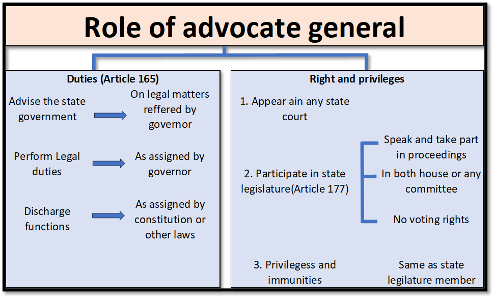

Constitutional Provisions and Role of the Advocate General in India
The Advocate General is a crucial legal advisor to a state government in India. The appointment, tenure, and related provisions for the Advocate General are outlined in the Constitution of India.
- Establishment of the Office: The Indian Constitution, under Article 165, establishes the office of the Advocate General for each state. This role is the senior most legal authority within a state, similar to the Attorney General at the national level.
- Rank and Precedence: Although the post of advocate general of the state is constitutional, in the official precedence, he is ranked below the solicitor general of India which is merely a statutory post.
- Key Members of the State Executive: In the structure of the State Executive, key members include the Governors, the Chief Minister, the Council of Ministers, and the State’s Advocate General.
- Article 165 and the Role: Article 165 in Part VI (The States) of the Constitution of India, under Chapter 2 (The Executive), outlines the role of the Advocate General of the States.
- Highest Legal Position within the State: This individual holds the highest legal position within the state. Collaborating with the Attorney General for India at the Centre, the State Advocate General plays a crucial role in the day-to-day operations of state governments in India’s federal system.
- Responsibilities and Position: Essentially, Article 165 delineates the responsibilities and position of the Advocate General in India, whose office shares similar roles and objectives with the country’s Attorney General.
Appointment and Tenure related Provisions
Appointment
- Authority for Appointment: The Advocate General is appointed by the Governor of the respective state.
- Qualifications: As per the Constitution, a person who is qualified to be appointed as a Judge of a High Court is eligible to be appointed as an Advocate General.
Tenure
- No Fixed Tenure: The Constitution does not specify a fixed tenure for the Advocate General.
- Service at the Governor’s Pleasure: The Advocate General holds office during the pleasure of the Governor. This means the Governor can remove the Advocate General at any time without providing any reason.
- Practical Tenure: Typically, the tenure of the Advocate General is co-terminus with the tenure of the government that appoints them. They often resign when a new government comes to power, although this is based on convention rather than a constitutional mandate.
Duties and Responsibilities
- Legal Advisor: The primary role of the Advocate General is to advise the state government upon legal matters.
- Representation in Courts: They represent the state government in legal proceedings in the High Court and sometimes in the Supreme Court.
- Right to Attend Legislature: The Advocate General has the right to speak and to take part in the proceedings of the state legislature, though without a right to vote.

Removal
As mentioned, the Advocate General serves at the pleasure of the Governor and can be removed by the Governor at any time. There is no formal process for removal, unlike judges, whose removal requires a more structured process.
Constraints on the Role of the State’s Advocate General
Certain constraints exist that impede the Advocate General’s capacity to address conflicts of interest and other issues effectively such as:
- Restrictions on Counsel and Representation: The Advocate General is barred from offering counsel or representing government officials from the State Government. They are also prohibited from providing guidance or acting as a witness in situations where their advice or appearance is sought for the State Government.
- Approval for Advocating in Criminal Proceedings: Approval from the State Government is mandatory for the Advocate General to advocate for the accused in criminal proceedings. This emphasizes the importance of official authorization in such legal matters.
- Restrictions on Business Affiliations: Furthermore, the Advocate General is restricted from assuming the role of a director in any business or organization without obtaining prior approval from the State Government. This stipulation aims to maintain a clear distinction between their legal responsibilities and external affiliations.
Attorney General of India vs. Advocate General of a State
| Aspect | Attorney General of India | Advocate General of a State |
|---|---|---|
| Constitutional Reference | Article 76 of the Indian Constitution | Article 165 of the Indian Constitution |
| Appointment | Appointed by the President of India | Appointed by the Governor of the state |
| Qualifications | Must be qualified to be a Judge of the Supreme Court | Must be qualified to be a Judge of the High Court |
| Role | Chief legal advisor to the Government of India; Represents the government in legal matters in the Supreme Court | Chief legal advisor to the State Government; Represents the state government in legal matters in the High Court |
| Participation in Legislature | Has the right to speak and to take part in the proceedings of both Houses of Parliament, but cannot vote | Has the right to speak and to take part in the proceedings of both Houses of the State Legislature, but cannot vote |
| Tenure | Not fixed by the Constitution; holds office during the pleasure of the President | Not fixed by the Constitution; holds office during the pleasure of the Governor |
| Jurisdiction | Represents the central government in all legal matters; can practice in any court in India | Usually represents the state government in legal matters within the state; jurisdiction typically limited to the state |
| Independence and Impartiality | Expected to be impartial; however, appointed by and serves at the pleasure of the President | Expected to be impartial; however, appointed by and serves at the pleasure of the Governor |
Importance and Conclusion
- Importance of the Advocate General: The Advocate General is essential in ensuring legal compliance and upholding constitutional values at the state level.
- Influence of Political Landscape: While their role is clearly defined, their effectiveness may be influenced by the political landscape, given their appointment and tenure are at the Governor’s discretion.
- Challenges and Responsibilities: Despite these challenges, the Advocate General is essential in ensuring legal compliance and upholding constitutional values at the state level.
Conclusion
The Advocate General is crucial in ensuring legal compliance and upholding constitutional values within a state. However, balancing legal advice with political considerations can pose challenges due to their appointment and tenure being at the Governor’s discretion. Despite these challenges, the Advocate General’s role remains vital in guiding the state government through legal complexities and maintaining the rule of law.